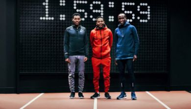
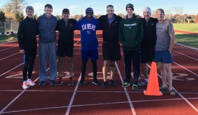
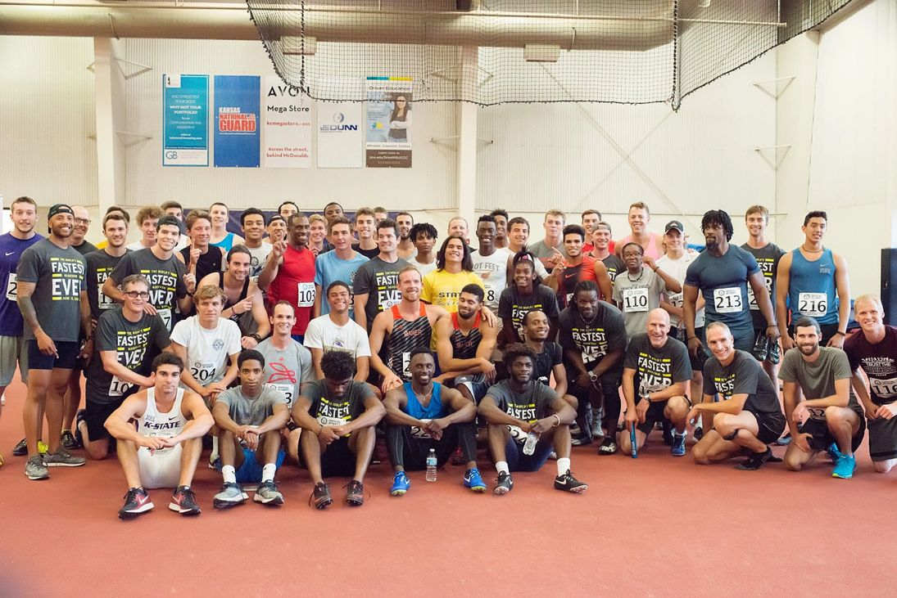
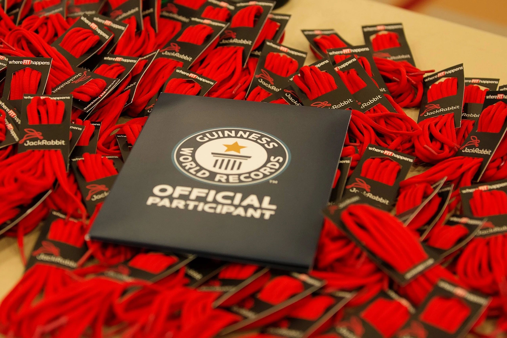
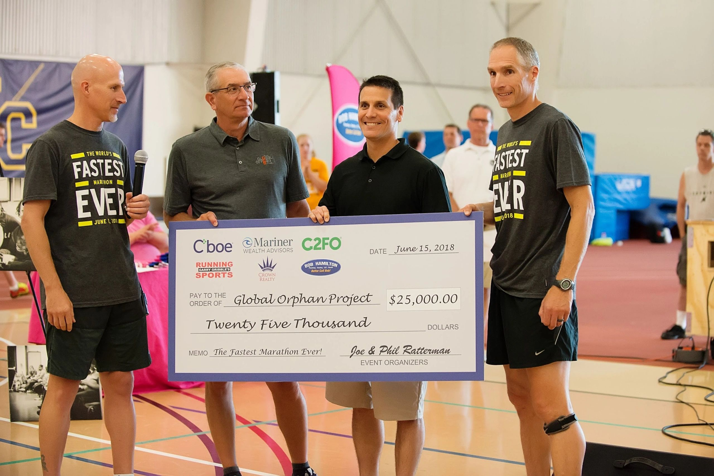

Miles on an indoor track
The World's Fastest Marathon Ever!
The Ratterman brothers organized and participated in a Kansas City area relay team that broke the Guinness World Records title for the fastest marathon distance in relay.
Handoffs, 223 meters at a time
New world record time
Raised for local charities
The Who
The Ratterman brothers, Joe and Phil, organized and participated in the event along with 58 other elite collegiate and high school runners from the Kansas City area. Together, the team broke the Guinness World Records title for the fastest marathon distance in relay.
The What
- A full marathon relay on an indoor track.
- 26.2 miles with 188 handoffs, 223 meters at a time.
- The previous record, set more than 20 years earlier, was 1 hour 38 minutes.
- The new world record time was 1 hour 30 minutes 40.316 seconds.
- The event also raised $58,000 for local charities.
When & Where
The event was held Friday, June 15, 2018, at the Johnson County Community College Indoor Track, and was officiated and adjudicated by an onsite representative from Guinness World Records.
Official Guinness Record
The Nike Breaking2 Campaign
Our inspiration came from the 2017 Nike Breaking2 campaign. Nike set out to see if a runner, with near-perfect training and race conditions, could run a marathon in under two hours. The physical feat is daunting: a runner would need to sustain a 4:33 per mile pace for the entire 26.2 mile course. Inspired by the project, and seeing that breaking two hours solo was not possible yet, the idea to break the two-hour marathon barrier in relay was born.

The Original Concept Team
In November 2017, we set out to test the concept of a high-speed relay using 200-meter legs on a college track. We wanted to break one hour in the half-marathon distance, which we did. Logistics and several key elements were successfully tested and proven that day, and we had a blast running together. All of us alternated for 13 legs of 200 meters each, with a final time of 57:59.10.
The Final Chapter
Confident that a relay team could break the two-hour barrier, we set our sights even higher. The obvious next step was the world record. We recruited 60 top athletes in our bid to break the Guinness World Records title for the fastest marathon distance in relay. The previous record was 1:38:50, but we broke it at 1:30:40.316.
All 60 Runners
The original concept-team runners are shown in bold.
- 109 Dexter Acsenvil
- 133 Malik Bauer
- 130 Matthew Baysinger
- 206 Ki'anie Brooks
- 208 Jason Crow
- 226 Vincent Cunigan
- 126 Ike Diggs
- 217 Devin Diggs
- 134 Keegan Donahue
- 135 Colton Donahue
- 121 Zach Doster
- 103 Phil Dougherty
- 211 Mark Fancher
- 223 Hayden Goodpaster
- 225 Julian Gutierrez
- 119 Devin Haddix
- 116 Lars Hanson
- 222 BJ Harvey
- 122 Justin Hickey
- 203 Rob Holcombe
- 101 Rich Holland
- 201 Damian Hood
- 132 Nick Ingolia
- 127 Chris Isaacson
- 113 Carson Jones
- 124 John Kenkel
- 120 Ryan Koster
- 118 Alex LaFrance
- 112 Antonio Lovelace
- 114 Christian Ludtke
- 117 Grayson Magruder
- 224 Daniel Malekani
- 129 Willie McInnis
- 219 Nolan McKay
- 215 Corbin Miller
- 220 William Neds
- 205 Thomas Netterville
- 218 Emmanuel Okwuone
- 207 Evan Pierson
- 204 Clint Purcell
- 210 Adam Pyle
- 209 Tom Pyle
- 110 Wynter Ramos
- 202 Guy Ramos
- 212 Darrell Randall
- 102 Phil Ratterman
- 106 Joe W. Ratterman
- 107 Joe P. Ratterman
- 108 Cody Ratterman
- 111 Destiny Ray
- 131 Jordan Scott
- 213 Jamel Sims
- 105 Rich Stigall
- 128 Andrew Stimson
- 125 Kurt Vukas
- 221 Birdsong Warren
- 214 Colin Webber
- 216 Thomas Wood
- 115 Quentin Worley
- 123 Sean Yake
Event Photos


